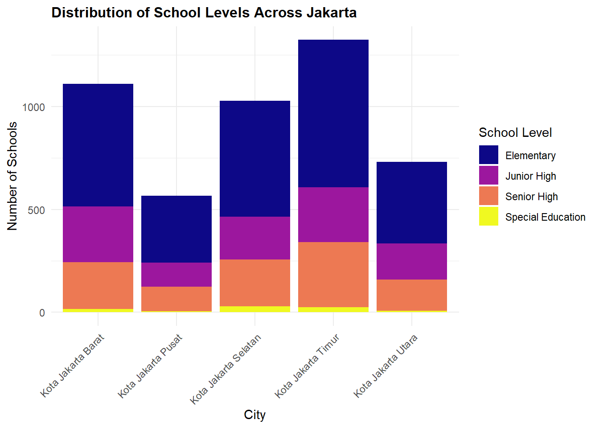

pacman::p_load(sf, tidyverse, knitr, viridis, patchwork, gridExtra, kableExtra, sfdep, tmap, tmaptools, patchwork, scales, spdep, ggrepel, spatstat, GWmodel, gtsummary, olsrr, ClustGeo, corrplot, ggpubr)Takehome 3
Project Methodology
Data Collection:
We gathered data on schools in Jakarta, including their location, type, and status. We also collected information on property prices and boundaries for administrative regions in Jakarta.
Geospatial Analysis:
- Spatial Point Patterns Analysis for School Locations (Provincial and City level)
- LISA and HCSA Analysis of Schools (District level)
- Geographically weighted regression for education levels versus availability and accessibility of schools (Sub-district level)
For my team, I’ll be covering a deeper dive into (3), which is GWR regression.
Loading Packages
Dataset Preparation
There are 3 datasets we will be using:
complete_data.csv: Contains information about schools in Indonesia, including their location, type, and status.geoBoundaries-IDN-ADM2_simplified: Contains simplified boundaries for administrative level 2 (ADM2) in Indonesia.BATAS_DESA_DESEMBER_2019_DUKCAPIL_DKI_JAKARTA: Contains detailed boundaries for villages (desa) in Jakarta.
1.0 Spatial Points Pattern Analysis of School Distribution at the Provincial and City Level
1.1 Data Preprocessing
indo_schools_kaggle <- read_csv("data/aspatial/complete_data.csv")Rows: 215371 Columns: 11
── Column specification ────────────────────────────────────────────────────────
Delimiter: ","
chr (6): province_name, city_name, district_name, school_name, stage, status
dbl (5): lat, long, province_area, total_population, total_education_age_pop...
ℹ Use `spec()` to retrieve the full column specification for this data.
ℹ Specify the column types or set `show_col_types = FALSE` to quiet this message.head(indo_schools_kaggle, n=20)# A tibble: 20 × 11
province_name city_name district_name school_name stage status lat long
<chr> <chr> <chr> <chr> <chr> <chr> <dbl> <dbl>
1 PAPUA Kab. Tolika… Kec. Gilungb… SMP SATAP … SMP N -3.42 138.
2 PAPUA Kab. Tolika… Kec. Wunin SD YPPGI W… SD S -3.48 139.
3 PAPUA Kab. Tolika… Kec. Bokondi… SMAN BOKON… SMA N -3.53 139.
4 PAPUA Kab. Tolika… Kec. Kuari SD INPRES … SD N -3.52 139.
5 PAPUA Kab. Tolika… Kec. Karubaga SMAS YPPGI… SMA S -3.45 139.
6 PAPUA Kab. Tolika… Kec. Wunin SD NEGERI … SD N -3.49 139.
7 PAPUA Kab. Tolika… Kec. Wina SD INPRES … SD N -3.42 138.
8 PAPUA Kab. Lanny … Kec. Tiomneri SD Negeri … SD N -3.86 138.
9 PAPUA Kab. Lanny … Kec. Pirime SMP YPPGI … SMP S -3.93 138.
10 PAPUA Kab. Lanny … Kec. Tiomneri SD INPRES … SD N -3.89 138.
11 PAPUA Kab. Lanny … Kec. Tiom SD NEGERI … SD N -3.92 138.
12 PAPUA Kab. Lanny … Kec. Dimba SMP NEGERI… SMP N -3.86 139.
13 PAPUA Kab. Lanny … Kec. Balingga SD Negeri … SD N -4.08 138.
14 PAPUA Kab. Lanny … Kec. Gamelia SD YPPGI Y… SD S -3.94 139.
15 PAPUA Kab. Lanny … Kec. Gamelia SD INPRES … SD N -3.87 139.
16 PAPUA Kab. Lanny … Kec. Tiom SMP NEGERI… SMP N -3.92 138.
17 PAPUA Kab. Lanny … Kec. Makki SMAN 1 MAK… SMA N -3.94 139.
18 PAPUA Kab. Lanny … Kec. Pirime SMP NEGERI… SMP N -3.86 138.
19 PAPUA Kab. Lanny … Kec. Pirime SMP NEGERI… SMP N -3.88 138.
20 PAPUA Kab. Lanny … Kec. Pirime SD INPRES … SD N -3.89 139.
# ℹ 3 more variables: province_area <dbl>, total_population <dbl>,
# total_education_age_population <dbl>jakarta_schools <- indo_schools_kaggle %>%
filter(province_name == "DKI JAKARTA",
city_name != "Kab. Kepulauan Seribu") %>%
filter(!is.na(long) & !is.na(lat)) %>%
st_as_sf(coords = c("long", "lat"), crs = 4326) %>%
mutate(
school_level = case_when(
stage %in% c("SD", "SDLB") ~ "Elementary",
stage %in% c("SMP", "SMPLB") ~ "Junior High",
stage %in% c("SMA", "SMK", "SMLB") ~ "Senior High",
TRUE ~ "Special Education"
),
school_type = if_else(status == "N", "Public", "Private")
)head(jakarta_schools)Simple feature collection with 6 features and 11 fields
Geometry type: POINT
Dimension: XY
Bounding box: xmin: 106.8139 ymin: -6.1992 xmax: 106.8642 ymax: -6.1462
Geodetic CRS: WGS 84
# A tibble: 6 × 12
province_name city_name district_name school_name stage status province_area
<chr> <chr> <chr> <chr> <chr> <chr> <dbl>
1 DKI JAKARTA Kota Jakar… Kec. Tanah A… SD NEGERI … SD N 664
2 DKI JAKARTA Kota Jakar… Kec. Senen SDN Kenari… SD N 664
3 DKI JAKARTA Kota Jakar… Kec. Johar B… SD NEGERI … SD N 664
4 DKI JAKARTA Kota Jakar… Kec. Menteng SMAS PSKD … SMA S 664
5 DKI JAKARTA Kota Jakar… Kec. Sawah B… SMKS STRAD… SMK S 664
6 DKI JAKARTA Kota Jakar… Kec. Cempaka… SDN Cempak… SD N 664
# ℹ 5 more variables: total_population <dbl>,
# total_education_age_population <dbl>, geometry <POINT [°]>,
# school_level <chr>, school_type <chr>adm2 <- st_read("data/geospatial", layer = "geoBoundaries-IDN-ADM2_simplified") %>%
filter(shapeName %in% c(
"Kota Jakarta Barat", "Kota Jakarta Pusat",
"Kota Jakarta Selatan", "Kota Jakarta Timur",
"Kota Jakarta Utara"
))Reading layer `geoBoundaries-IDN-ADM2_simplified' from data source
`C:\Users\yapho\Documents\SMU\smu y4\is415\hxyap_IS415\takehome\ex3\data\geospatial'
using driver `ESRI Shapefile'
Simple feature collection with 519 features and 5 fields
Geometry type: MULTIPOLYGON
Dimension: XY
Bounding box: xmin: 95.01115 ymin: -11.00762 xmax: 141.0194 ymax: 6.07693
Geodetic CRS: WGS 84batas <- st_read("data/geospatial", layer = "BATAS_DESA_DESEMBER_2019_DUKCAPIL_DKI_JAKARTA") %>%
select(OBJECT_ID, PROVINSI, KAB_KOTA, KECAMATAN, DESA_KELUR,
JUMLAH_PEN, JUMLAH_KK, LUAS_WILAY, KEPADATAN, geometry) %>%
rename(
province = PROVINSI,
city = KAB_KOTA,
district = KECAMATAN,
subdistrict = DESA_KELUR,
population = JUMLAH_PEN,
total_families = JUMLAH_KK,
area_size = LUAS_WILAY,
popn_density = KEPADATAN
) %>%
filter(!is.na(city) & city != "KEPULAUAN SERIBU") %>%
mutate(city = case_when(
city == "JAKARTA BARAT" ~ "Kota Jakarta Barat",
city == "JAKARTA PUSAT" ~ "Kota Jakarta Pusat",
city == "JAKARTA SELATAN" ~ "Kota Jakarta Selatan",
city == "JAKARTA TIMUR" ~ "Kota Jakarta Timur",
city == "JAKARTA UTARA" ~ "Kota Jakarta Utara",
TRUE ~ city
))Reading layer `BATAS_DESA_DESEMBER_2019_DUKCAPIL_DKI_JAKARTA' from data source
`C:\Users\yapho\Documents\SMU\smu y4\is415\hxyap_IS415\takehome\ex3\data\geospatial'
using driver `ESRI Shapefile'
Simple feature collection with 269 features and 161 fields
Geometry type: MULTIPOLYGON
Dimension: XY
Bounding box: xmin: 106.3831 ymin: -6.370815 xmax: 106.9728 ymax: -5.184322
Geodetic CRS: WGS 84head(batas)Simple feature collection with 6 features and 9 fields
Geometry type: MULTIPOLYGON
Dimension: XY
Bounding box: xmin: 106.8105 ymin: -6.17575 xmax: 106.8711 ymax: -6.141043
Geodetic CRS: WGS 84
OBJECT_ID province city district subdistrict population
1 25477 DKI JAKARTA Kota Jakarta Barat TAMAN SARI KEAGUNGAN 21609
2 25478 DKI JAKARTA Kota Jakarta Barat TAMAN SARI GLODOK 9069
3 25397 DKI JAKARTA Kota Jakarta Pusat KEMAYORAN HARAPAN MULIA 29085
4 25400 DKI JAKARTA Kota Jakarta Pusat KEMAYORAN CEMPAKA BARU 41913
5 25390 DKI JAKARTA Kota Jakarta Pusat SAWAH BESAR PASAR BARU 15793
6 25391 DKI JAKARTA Kota Jakarta Pusat SAWAH BESAR KARANG ANYAR 33383
total_families area_size popn_density geometry
1 7255 0.36 60504 MULTIPOLYGON (((106.8164 -6...
2 3273 0.37 24527 MULTIPOLYGON (((106.8148 -6...
3 9217 0.53 54465 MULTIPOLYGON (((106.8576 -6...
4 13766 0.97 42993 MULTIPOLYGON (((106.8631 -6...
5 5599 1.76 8971 MULTIPOLYGON (((106.8369 -6...
6 11276 0.47 71628 MULTIPOLYGON (((106.8316 -6...district_mapping <- c(
"TAMAN SARI" = "Kec. Taman Sari",
"KEMAYORAN" = "Kec. Kemayoran",
"SAWAH BESAR" = "Kec. Sawah Besar",
"GAMBIR" = "Kec. Gambir",
"SENEN" = "Kec. Senen",
"CEMPAKA PUTIH" = "Kec. Cempaka Putih",
"MENTENG" = "Kec. Menteng",
"TANAH ABANG" = "Kec. Tanah Abang",
"JOHAR BARU" = "Kec. Johar Baru",
"KOJA" = "Kec. Koja",
"PENJARINGAN" = "Kec. Penjaringan",
"TANJUNG PRIOK" = "Kec. Tanjung Priok",
"CILINCING" = "Kec. Cilincing",
"GROGOL PETAMBURAN" = "Kec. Grogol Petamburan",
"PADEMANGAN" = "Kec. Pademangan",
"KELAPA GADING" = "Kec. Kelapa Gading",
"CENGKARENG" = "Kec. Cengkareng",
"TAMBORA" = "Kec. Tambora",
"KEBON JERUK" = "Kec. Kebon Jeruk",
"KALIDERES" = "Kec. Kali Deres",
"PAL MERAH" = "Kec. Palmerah",
"JATINEGARA" = "Kec. Jatinegara",
"KEMBANGAN" = "Kec. Kembangan",
"TEBET" = "Kec. Tebet",
"SETIABUDI" = "Kec. Setia Budi",
"MAMPANG PRAPATAN" = "Kec. Mampang Prapatan",
"PASAR MINGGU" = "Kec. Pasar Minggu",
"KEBAYORAN LAMA" = "Kec. Kebayoran Lama",
"KEBAYORAN BARU" = "Kec. Kebayoran Baru",
"CILANDAK" = "Kec. Cilandak",
"PESANGGRAHAN" = "Kec. Pesanggrahan",
"PANCORAN" = "Kec. Pancoran",
"JAGAKARSA" = "Kec. Jagakarsa",
"MATRAMAN" = "Kec. Matraman",
"PULOGADUNG" = "Kec. Pulo Gadung",
"KRAMATJATI" = "Kec. Kramat Jati",
"PASAR REBO" = "Kec. Pasar Rebo",
"DUREN SAWIT" = "Kec. Duren Sawit",
"MAKASAR" = "Kec. Makasar",
"CIRACAS" = "Kec. Ciracas",
"CIPAYUNG" = "Kec. Cipayung",
"CAKUNG" = "Kec. Cakung"
)
batas <- batas %>%
mutate(district = district_mapping[district])1.1 EDA at the Provincial Level
1.1.1 Overall Distribution of Schools
ggplot(data = jakarta_schools) +
geom_bar(aes(x = city_name, fill = city_name)) +
scale_fill_viridis_d(option = "plasma") +
theme_minimal() +
theme(
axis.text.x = element_text(angle = 45, hjust = 1),
plot.title = element_text(size = 12, face = "bold"),
legend.position = "none"
) +
labs(
title = "Distribution of Schools Across Jakarta",
x = "City",
y = "Number of Schools"
)
Key Observations:
- The plot reveals significant disparity in school distribution across Jakarta
- East Jakarta (Timur) has the highest number of schools, followed by West Jakarta (Barat) then South Jakarta (Selatan). This is consistent with the population density distribution in Jakarta.
1.1.2 Distribution of School Levels
ggplot(data = jakarta_schools) +
geom_bar(aes(x = city_name, fill = school_level)) +
scale_fill_viridis_d(option = "plasma") +
theme_minimal() +
theme(
axis.text.x = element_text(angle = 45, hjust = 1),
plot.title = element_text(size = 12, face = "bold")
) +
labs(
title = "Distribution of School Levels Across Jakarta",
x = "City",
y = "Number of Schools",
fill = "School Level"
)
Key Observations:
- Across all municipalities, elementary schools are the most common
- There is a relatively consistent proportion of Junior and Senior High Schools
- Special Education schools are less common but present in all municipalities
- While total numbers differ, the proportional distribution of school levels remains fairly consistent across cities, suggesting planned distribution rather than random clustering
1.1.3 School Density Across Jakarta
ggplot() +
geom_sf(data = adm2, aes(fill = lengths(st_intersects(adm2, jakarta_schools)))) +
scale_fill_viridis_c(option = "plasma") +
theme_minimal() +
labs(
title = "School Density Across Jakarta",
fill = "Number of\nSchools"
)1.1.4 Population Density in Jakarta
ggplot() +
geom_sf(data = batas, aes(fill = popn_density)) +
scale_fill_viridis_c(
option = "plasma",
labels = scales::comma_format()
) +
theme_minimal() +
labs(
title = "Population Density in Jakarta",
fill = "Population\nDensity\n(per km²)"
)
Key Observations:
- The density map reveals high population clusters in central Jakarta (yellow/orange areas)
- There is an interesting mismatch with school density in some areas
- Several high-density pockets are scattered across Jakarta
1.5 Summary
- Our preliminary EDA at the provincial level is too macro to provide detailed insights, but necessary to understand the overall distribution of schools in Jakarta
2.0 Additional EDA
We note that Jakarta uses
# Convert coordinate systems for accurate distance measurement
# UTM Zone 48S (EPSG:32748) is appropriate for Jakarta
jakarta_schools_utm <- st_transform(jakarta_schools, 32748)
adm2_utm <- st_transform(adm2, 32748)
batas_utm <- st_transform(batas, 32748)# For jakarta_schools_utm
glimpse(jakarta_schools_utm)Rows: 4,762
Columns: 12
$ province_name <chr> "DKI JAKARTA", "DKI JAKARTA", "DKI JAKA…
$ city_name <chr> "Kota Jakarta Pusat", "Kota Jakarta Pus…
$ district_name <chr> "Kec. Tanah Abang", "Kec. Senen", "Kec.…
$ school_name <chr> "SD NEGERI KEBON MELATI 01 PG", "SDN Ke…
$ stage <chr> "SD", "SD", "SD", "SMA", "SMK", "SD", "…
$ status <chr> "N", "N", "N", "S", "S", "N", "S", "N",…
$ province_area <dbl> 664, 664, 664, 664, 664, 664, 664, 664,…
$ total_population <dbl> 10679951, 10679951, 10679951, 10679951,…
$ total_education_age_population <dbl> 3235408, 3235408, 3235408, 3235408, 323…
$ geometry <POINT [m]> POINT (700704.4 9315085), POINT (…
$ school_level <chr> "Elementary", "Elementary", "Elementary…
$ school_type <chr> "Public", "Public", "Public", "Private"…# For batas_utm
glimpse(batas_utm)Rows: 261
Columns: 10
$ OBJECT_ID <dbl> 25477, 25478, 25397, 25400, 25390, 25391, 25394, 25386,…
$ province <chr> "DKI JAKARTA", "DKI JAKARTA", "DKI JAKARTA", "DKI JAKAR…
$ city <chr> "Kota Jakarta Barat", "Kota Jakarta Barat", "Kota Jakar…
$ district <chr> "Kec. Taman Sari", "Kec. Taman Sari", "Kec. Kemayoran",…
$ subdistrict <chr> "KEAGUNGAN", "GLODOK", "HARAPAN MULIA", "CEMPAKA BARU",…
$ population <dbl> 21609, 9069, 29085, 41913, 15793, 33383, 35906, 21828, …
$ total_families <dbl> 7255, 3273, 9217, 13766, 5599, 11276, 12817, 7328, 3049…
$ area_size <dbl> 0.36, 0.37, 0.53, 0.97, 1.76, 0.47, 1.31, 1.14, 0.82, 0…
$ popn_density <dbl> 60504, 24527, 54465, 42993, 8971, 71628, 27463, 19144, …
$ geometry <MULTIPOLYGON [m]> MULTIPOLYGON (((700997 9320..., MULTIPOLYG…# For column names
names(jakarta_schools_utm) [1] "province_name" "city_name"
[3] "district_name" "school_name"
[5] "stage" "status"
[7] "province_area" "total_population"
[9] "total_education_age_population" "geometry"
[11] "school_level" "school_type" names(batas_utm) [1] "OBJECT_ID" "province" "city" "district"
[5] "subdistrict" "population" "total_families" "area_size"
[9] "popn_density" "geometry" # For dimensions
dim(jakarta_schools_utm)[1] 4762 12dim(batas_utm)[1] 261 10We’ll now look at school density per subdistrict:
# Calculate school density per subdistrict
# Join school counts with batas dataset
school_counts <- st_join(batas_utm, jakarta_schools_utm) %>%
group_by(OBJECT_ID) %>%
summarise(
total_schools = n(),
elementary_schools = sum(school_level == "Elementary"),
junior_schools = sum(school_level == "Junior High"),
senior_schools = sum(school_level == "Senior High"),
public_schools = sum(school_type == "Public"),
private_schools = sum(school_type == "Private")
)
# Visualize school density metrics
tmap_mode("plot")tmap mode set to plottingtm_shape(school_counts) +
tm_fill("total_schools",
style = "quantile",
palette = "viridis") +
tm_borders() +
tm_layout(title = "School Density by Subdistrict")As we can see, there are some spots (in the middle and the north of Jakarta where there seems to be sparse coverage of schools. Let’s cross reference our school accessibility index for more info:
# Calculate centroids
centroids <- st_centroid(batas_utm)Warning: st_centroid assumes attributes are constant over geometries# Create distance matrix
dist_matrix <- st_distance(centroids, jakarta_schools_utm)
# Find minimum distance for each centroid
min_distances <- apply(dist_matrix, 1, min)
# Add to batas
batas_utm$nearest_school_dist <- min_distances
# Visualize
tm_shape(batas_utm) +
tm_fill("nearest_school_dist",
style = "quantile",
palette = "viridis",
title = "Distance (m)") +
tm_borders() +
tm_layout(title = "Distance to Nearest School")Key Observations:
Spatial Distribution Patterns:
Central Jakarta shows high school density (8-14 schools) but very short distances to nearest schools (4-97m)
Outer regions, particularly in the east and west, have higher numbers of schools (26-65) but longer distances (294-1,014m)
Some subdistricts show an interesting mismatch: high school counts but relatively long distances, suggesting uneven distribution within the subdistrict
Accessibility implications
The central areas demonstrate better accessibility (darker purple in distance map)
Peripheral areas (yellow) show reduced accessibility despite sometimes having more schools
This suggests that school placement might not be optimally aligned with population distribution.
3.0 Clustering EDA
We’ll start by using hierarchical clustering. Hierarchical clustering provides a systematic, data-driven approach to identify groups of subdistricts with similar educational characteristics. This helps us select representative areas for detailed GWR analysis while ensuring we capture the full range of educational patterns in Jakarta.
# First, create a normalized dataset with relevant variables
clustering_data <- school_counts %>%
st_drop_geometry() %>% # Remove geometry for numerical calculations
mutate(
school_density = as.numeric(total_schools),
elementary_ratio = as.numeric(elementary_schools / total_schools),
junior_ratio = as.numeric(junior_schools / total_schools),
senior_ratio = as.numeric(senior_schools / total_schools),
public_ratio = as.numeric(public_schools / total_schools)
) %>%
# Select only numeric columns for clustering
select(school_density, elementary_ratio, junior_ratio,
senior_ratio, public_ratio)
summary(clustering_data) school_density elementary_ratio junior_ratio senior_ratio
Min. : 1.00 Min. :0.0000 Min. :0.0000 Min. :0.0000
1st Qu.:10.00 1st Qu.:0.4615 1st Qu.:0.1429 1st Qu.:0.1429
Median :16.00 Median :0.5600 Median :0.2000 Median :0.2000
Mean :18.14 Mean :0.5650 Mean :0.2085 Mean :0.2100
3rd Qu.:24.00 3rd Qu.:0.6667 3rd Qu.:0.2688 3rd Qu.:0.2778
Max. :65.00 Max. :1.0000 Max. :0.4444 Max. :1.0000
NA's :2 NA's :2 NA's :2
public_ratio
Min. :0.0000
1st Qu.:0.3604
Median :0.4800
Mean :0.4888
3rd Qu.:0.6250
Max. :1.0000
NA's :2 str(clustering_data)tibble [261 × 5] (S3: tbl_df/tbl/data.frame)
$ school_density : num [1:261] 3 10 30 7 5 14 28 15 4 16 ...
$ elementary_ratio: num [1:261] 0.333 0.7 0.333 0.714 0.6 ...
$ junior_ratio : num [1:261] 0 0.2 0.3 0.143 0.2 ...
$ senior_ratio : num [1:261] 0.667 0.1 0.367 0.143 0.2 ...
$ public_ratio : num [1:261] 1 0.7 0.267 0.857 0.2 ...We now prepare our distance matrix.
# Normalize the data
normalized_data <- scale(clustering_data)feature_dist <- dist(normalized_data)# 4. Perform hierarchical clustering
hc <- hclust(feature_dist, method = "ward.D2")Great! let’s now plot the dendrogram.
# 5. Plot dendrogram
plot(hc, main = "Hierarchical Clustering of Jakarta Subdistricts",
xlab = "Subdistricts", ylab = "Height")# 6. Cut tree to get 5 clusters
hc_clusters <- cutree(hc, k = 5)# 7. Add clusters back to spatial data
school_counts$hc_cluster <- as.factor(hc_clusters)# 8. Visualize clusters spatially
tm_shape(school_counts) +
tm_fill("hc_cluster",
palette = "Set3",
title = "Hierarchical Clusters") +
tm_borders() +
tm_layout(title = "Traditional Hierarchical Clustering")
Note
For hclust, we use Ward’s method, also called Ward’s minimum variance method, is a criterion used in hierarchical clustering that focuses on minimizing the total within-cluster variance. The “D2” variant specifically refers to the squared Euclidean distance implementation. It’s good for finding spatial clusters that represent similar administrative or functional areas.
4.0 Skater Clustering
We’ll now use Skater to take a glance from a MST (Minimum Spanning Tree) approach. Although we will probably use skater to define our local GWR later, and set up bandwidth parameters, we’ll still be considering our previous hclust.
4.1.1 Create neighborhood
clustering_data <- school_counts %>%
st_drop_geometry() %>%
mutate(
school_density = as.numeric(total_schools),
elementary_ratio = elementary_schools/total_schools,
junior_ratio = junior_schools/total_schools,
senior_ratio = senior_schools/total_schools,
public_ratio = public_schools/total_schools
) %>%
select(school_density, elementary_ratio, junior_ratio,
senior_ratio, public_ratio) %>%
as.data.frame()jakarta_nb <- poly2nb(school_counts, queen=TRUE)
# 2. Calculate edge costs using the neighborhood structure
lcosts <- nbcosts(jakarta_nb, clustering_data)
# 3. Create spatial weights with costs
jakarta.w <- nb2listw(jakarta_nb,
lcosts,
style="B")
# 4. Create minimum spanning tree
jakarta.mst <- mstree(jakarta.w)# 5. Get coordinates for plotting
coords <- st_coordinates(st_centroid(school_counts))Warning: st_centroid assumes attributes are constant over geometries# 6. Plot the MST
plot(st_geometry(school_counts),
border=gray(.5))
plot.mst(jakarta.mst,
coords,
col="blue",
cex.lab=0.7,
cex.circles=0.005,
add=TRUE)# 7. Compute SKATER clusters
clust5 <- skater(edges = jakarta.mst[,1:2],
data = as.matrix(clustering_data),
method = "euclidean",
ncuts = 4) # This will give 5 clusters
# 8. Add clusters to spatial data
school_counts$skater_cluster <- as.factor(clust5$groups)# 9. Visualize final clusters
tm_shape(school_counts) +
tm_fill("skater_cluster",
palette = "Set3",
title = "SKATER Clusters") +
tm_borders() +
tm_layout(title = "School Clusters in Jakarta")# 10. Check cluster sizes
print("Number of schools in each cluster:")[1] "Number of schools in each cluster:"print(table(clust5$groups))
1 2 3 4 5
204 6 20 23 8 # 11. Create cluster summary
cluster_summary <- school_counts %>%
st_drop_geometry() %>%
group_by(skater_cluster) %>%
summarise(
n_areas = n(),
avg_schools = mean(total_schools),
avg_elementary = mean(elementary_schools),
avg_junior = mean(junior_schools),
avg_senior = mean(senior_schools)
)
print("Cluster Summary:")[1] "Cluster Summary:"print(cluster_summary)# A tibble: 5 × 6
skater_cluster n_areas avg_schools avg_elementary avg_junior avg_senior
<fct> <int> <dbl> <dbl> <dbl> <dbl>
1 1 204 15.2 8.29 3.26 3.35
2 2 6 2.5 NA NA NA
3 3 20 34.3 18.0 8.6 7.35
4 4 23 29.3 16.4 5.61 6.74
5 5 8 32.6 18.5 7.25 6.624.1.2 Takeaways from hclust vs Skater
SKATER has a more uneven distribution with one dominant cluster (turquoise) covering most of Jakarta, compared to hierarchical clustering with a more fragmented clustering.
5.0 GWR for Education level
We’ll first extract the education levels from our initial batas dataset.
# First read the original file with all columns
batas_full <- st_read("data/geospatial", layer = "BATAS_DESA_DESEMBER_2019_DUKCAPIL_DKI_JAKARTA")Reading layer `BATAS_DESA_DESEMBER_2019_DUKCAPIL_DKI_JAKARTA' from data source
`C:\Users\yapho\Documents\SMU\smu y4\is415\hxyap_IS415\takehome\ex3\data\geospatial'
using driver `ESRI Shapefile'
Simple feature collection with 269 features and 161 fields
Geometry type: MULTIPOLYGON
Dimension: XY
Bounding box: xmin: 106.3831 ymin: -6.370815 xmax: 106.9728 ymax: -5.184322
Geodetic CRS: WGS 84batas_full_utm <- st_transform(batas_full, 32748)
# Create education metrics with original column names then rename
batas_edu_levels <- batas_full_utm %>%
mutate(
# Higher education ratio (diploma and above)
higher_ed_ratio = (DIPLOMA_I + DIPLOMA_II + DIPLOMA_IV +
STRATA_II + STRATA_III) / JUMLAH_PEN,
# Basic education completion ratio
basic_ed_ratio = (TAMAT_SD + SLTP + SLTA) / JUMLAH_PEN,
# No education ratio
no_ed_ratio = (TIDAK_BELU + BELUM_TAMA) / JUMLAH_PEN
) %>%
# Select and rename columns
select(
PROVINSI, KAB_KOTA, KECAMATAN, DESA_KELUR,
JUMLAH_PEN, higher_ed_ratio, basic_ed_ratio,
no_ed_ratio, geometry
) %>%
rename(
province = PROVINSI,
city = KAB_KOTA,
district = KECAMATAN,
subdistrict = DESA_KELUR,
population = JUMLAH_PEN
) %>%
# Filter and standardize city names
filter(!is.na(city) & city != "KEPULAUAN SERIBU") %>%
mutate(city = case_when(
city == "JAKARTA BARAT" ~ "Kota Jakarta Barat",
city == "JAKARTA PUSAT" ~ "Kota Jakarta Pusat",
city == "JAKARTA SELATAN" ~ "Kota Jakarta Selatan",
city == "JAKARTA TIMUR" ~ "Kota Jakarta Timur",
city == "JAKARTA UTARA" ~ "Kota Jakarta Utara",
TRUE ~ city
))# Now proceed with the cluster analysis
east_cluster_edu <- batas_edu_levels %>%
filter(city == "Kota Jakarta Timur")central_cluster_edu <- batas_edu_levels %>%
filter(city == "Kota Jakarta Pusat")5.1.1 Cluster data prep
Now that we have our filtered education levels for our clusters, let’s begin.
5.1.1 Education pattern visualization
# 3. Visualize education patterns
edu_map <- tm_shape(batas_edu_levels) +
tm_polygons(alpha = 0.1) +
tm_shape(east_cluster_edu) +
tm_fill(col = "higher_ed_ratio",
palette = "Reds",
title = "Higher Education Ratio") +
tm_shape(central_cluster_edu) +
tm_fill(col = "higher_ed_ratio",
palette = "Blues",
title = "Higher Education Ratio") +
tm_layout(title = "Education Levels: East vs Central Jakarta")
print(edu_map)5.1.2 Building GWR model
district_boundaries <- batas_utm %>%
group_by(city, district) %>%
summarise(
total_population = sum(population),
total_area = sum(area_size),
popn_density = total_population / total_area,
do_union = TRUE,
.groups = 'drop'
)
# Then do your school density analysis at district level
school_density_analysis <- district_boundaries %>%
mutate(
total_schools = lengths(st_intersects(., jakarta_schools_utm)),
elementary_schools = lengths(st_intersects(.,
jakarta_schools_utm[jakarta_schools_utm$school_level == "Elementary",])),
junior_schools = lengths(st_intersects(.,
jakarta_schools_utm[jakarta_schools_utm$school_level == "Junior High",])),
senior_schools = lengths(st_intersects(.,
jakarta_schools_utm[jakarta_schools_utm$school_level == "Senior High",])),
special_schools = lengths(st_intersects(.,
jakarta_schools_utm[jakarta_schools_utm$school_level == "Special Education",])),
# Calculate school density (schools per square km)
school_density = total_schools / total_area,
elementary_density = elementary_schools / total_area,
junior_high_density = junior_schools / total_area,
senior_high_density = senior_schools / total_area,
special_ed_density = special_schools / total_area
)head(school_density_analysis)Simple feature collection with 6 features and 15 fields
Geometry type: POLYGON
Dimension: XY
Bounding box: xmin: 686587.9 ymin: 9311572 xmax: 700349.5 ymax: 9325980
Projected CRS: WGS 84 / UTM zone 48S
# A tibble: 6 × 16
city district total_population total_area popn_density
<chr> <chr> <dbl> <dbl> <dbl>
1 Kota Jakarta Barat Kec. Cengkareng 562072 26.5 21178.
2 Kota Jakarta Barat Kec. Grogol Petam… 239565 11.0 21878.
3 Kota Jakarta Barat Kec. Kali Deres 435837 28.8 15144.
4 Kota Jakarta Barat Kec. Kebon Jeruk 355830 17.4 20497.
5 Kota Jakarta Barat Kec. Kembangan 296004 25.5 11617.
6 Kota Jakarta Barat Kec. Palmerah 231232 7.44 31080.
# ℹ 11 more variables: geometry <POLYGON [m]>, total_schools <int>,
# elementary_schools <int>, junior_schools <int>, senior_schools <int>,
# special_schools <int>, school_density <dbl>, elementary_density <dbl>,
# junior_high_density <dbl>, senior_high_density <dbl>,
# special_ed_density <dbl># 1. Basic correlation analysis
analysis_data <- data.frame(
# Education ratios
higher_ed_ratio = batas_edu_levels$higher_ed_ratio,
basic_ed_ratio = batas_edu_levels$basic_ed_ratio,
no_ed_ratio = batas_edu_levels$no_ed_ratio,
# School accessibility metrics
school_density = clustering_data$school_density,
elementary_ratio = clustering_data$elementary_ratio,
junior_ratio = clustering_data$junior_ratio,
senior_ratio = clustering_data$senior_ratio,
public_ratio = clustering_data$public_ratio,
nearest_school_dist = batas_utm$nearest_school_dist
)# Create correlation matrix
correlation_matrix <- cor(analysis_data, use = "complete.obs")
# Visualize correlations
corrplot(correlation_matrix,
method = "color",
type = "upper",
addCoef.col = "black",
number.cex = 0.7,
tl.cex = 0.7,
title = "Correlation Matrix: Education Levels and School Accessibility")# Create scatter plots for key relationships
p1 <- ggplot(analysis_data, aes(x = school_density, y = higher_ed_ratio)) +
geom_point(alpha = 0.6) +
geom_smooth(method = "lm", se = TRUE) +
labs(title = "Higher Education vs School Density",
x = "School Density",
y = "Higher Education Ratio") +
theme_minimal()
p2 <- ggplot(analysis_data, aes(x = nearest_school_dist, y = higher_ed_ratio)) +
geom_point(alpha = 0.6) +
geom_smooth(method = "lm", se = TRUE) +
labs(title = "Higher Education vs Distance to Nearest School",
x = "Distance to Nearest School",
y = "Higher Education Ratio") +
theme_minimal()
p3 <- ggplot(analysis_data, aes(x = senior_ratio, y = higher_ed_ratio)) +
geom_point(alpha = 0.6) +
geom_smooth(method = "lm", se = TRUE) +
labs(title = "Higher Education vs Senior School Ratio",
x = "Senior School Ratio",
y = "Higher Education Ratio") +
theme_minimal()
# Arrange plots
grid.arrange(p1, p2, p3, ncol = 2)`geom_smooth()` using formula = 'y ~ x'
`geom_smooth()` using formula = 'y ~ x'
`geom_smooth()` using formula = 'y ~ x'Warning: Removed 2 rows containing non-finite outside the scale range
(`stat_smooth()`).Warning: Removed 2 rows containing missing values or values outside the scale range
(`geom_point()`).# Fit multiple regression model
model <- lm(higher_ed_ratio ~ school_density + nearest_school_dist +
elementary_ratio + junior_ratio + senior_ratio + public_ratio,
data = analysis_data)
# Model diagnostics
summary(model)
Call:
lm(formula = higher_ed_ratio ~ school_density + nearest_school_dist +
elementary_ratio + junior_ratio + senior_ratio + public_ratio,
data = analysis_data)
Residuals:
Min 1Q Median 3Q Max
-0.14810 -0.05414 -0.00542 0.03036 0.32091
Coefficients:
Estimate Std. Error t value Pr(>|t|)
(Intercept) 2.971e-01 1.313e-01 2.263 0.0245 *
school_density 7.974e-04 4.377e-04 1.822 0.0696 .
nearest_school_dist 1.361e-05 3.077e-05 0.442 0.6587
elementary_ratio -1.444e-01 1.315e-01 -1.099 0.2730
junior_ratio -1.464e-01 1.407e-01 -1.041 0.2990
senior_ratio -2.078e-01 1.353e-01 -1.535 0.1259
public_ratio 1.610e-03 2.695e-02 0.060 0.9524
---
Signif. codes: 0 '***' 0.001 '**' 0.01 '*' 0.05 '.' 0.1 ' ' 1
Residual standard error: 0.076 on 252 degrees of freedom
(2 observations deleted due to missingness)
Multiple R-squared: 0.0269, Adjusted R-squared: 0.003728
F-statistic: 1.161 on 6 and 252 DF, p-value: 0.3278ols_vif_tol(model) Variables Tolerance VIF
1 school_density 0.95295384 1.049369
2 nearest_school_dist 0.97602641 1.024562
3 elementary_ratio 0.05078453 19.691034
4 junior_ratio 0.12818234 7.801387
5 senior_ratio 0.08188472 12.212291
6 public_ratio 0.76809224 1.3019275.1.3 Analysis
The very low R-squared (0.02692) and adjusted R-squared (0.003747) suggest that:
The global model explains very little of the variation in higher education ratios
GWR might be more appropriate since it can capture local variations that this global model misses
Variable selection for GWR:
Only school_density shows marginal significance (p = 0.0697)
nearest_school_dist has very low significance (p = 0.6549)
The ratio variables all have relatively high p-values
We will now compare simple and complex models.
6.0 It’s time for GWR
# First identify complete cases
complete_indices <- which(!is.na(clustering_data$senior_ratio))
# Calculate centroids first, explicitly handling the warning
centroids <- st_centroid(batas_edu_levels, of_largest_polygon = TRUE)Warning: st_centroid assumes attributes are constant over geometriescentroid_coords <- st_coordinates(centroids)[complete_indices,]
# Create spatial dataframes with modern CRS syntax
simple_gwr_data <- SpatialPointsDataFrame(
coords = centroid_coords,
data = data.frame(
higher_ed_ratio = batas_edu_levels$higher_ed_ratio[complete_indices],
school_density = clustering_data$school_density[complete_indices]
),
proj4string = CRS("EPSG:32748") # Modern syntax for UTM Zone 48S
)
selected_gwr_data <- SpatialPointsDataFrame(
coords = centroid_coords,
data = data.frame(
higher_ed_ratio = batas_edu_levels$higher_ed_ratio[complete_indices],
school_density = clustering_data$school_density[complete_indices],
senior_ratio = clustering_data$senior_ratio[complete_indices]
),
proj4string = CRS("EPSG:32748") # Modern syntax for UTM Zone 48S
)
# Since the data is already in UTM Zone 48S, we don't need to transform it
simple_gwr_data_proj <- simple_gwr_data
selected_gwr_data_proj <- selected_gwr_dataCool. Let’s now do other variables.
bw.fixed <- bw.gwr(
formula = higher_ed_ratio ~ school_density,
data = simple_gwr_data_proj,
approach = "CV",
kernel = "gaussian",
adaptive = FALSE,
longlat = FALSE)Fixed bandwidth: 22400.97 CV score: 1.482623
Fixed bandwidth: 13847.33 CV score: 1.446493
Fixed bandwidth: 8560.89 CV score: 1.365928
Fixed bandwidth: 5293.689 CV score: 1.229182
Fixed bandwidth: 3274.449 CV score: 1.11576
Fixed bandwidth: 2026.489 CV score: 1.05054
Fixed bandwidth: 1255.208 CV score: 1.046343
Fixed bandwidth: 778.5296 CV score: 1.416962
Fixed bandwidth: 1549.811 CV score: 1.033807
Fixed bandwidth: 1731.886 CV score: 1.037553
Fixed bandwidth: 1437.283 CV score: 1.034906
Fixed bandwidth: 1619.357 CV score: 1.034602
Fixed bandwidth: 1506.829 CV score: 1.033832 # Run fixed bandwidth GWR
gwr.fixed <- gwr.basic(
formula = higher_ed_ratio ~ school_density,
data = simple_gwr_data_proj,
bw = bw.fixed,
kernel = "gaussian",
adaptive = FALSE,
longlat = FALSE)
bw.adaptive <- bw.gwr(
formula = higher_ed_ratio ~ school_density,
data = simple_gwr_data_proj,
approach = "CV",
kernel = "gaussian",
adaptive = TRUE,
longlat = FALSE)Adaptive bandwidth: 167 CV score: 1.429762
Adaptive bandwidth: 111 CV score: 1.38874
Adaptive bandwidth: 75 CV score: 1.341174
Adaptive bandwidth: 54 CV score: 1.297753
Adaptive bandwidth: 40 CV score: 1.256997
Adaptive bandwidth: 32 CV score: 1.229152
Adaptive bandwidth: 26 CV score: 1.20383
Adaptive bandwidth: 23 CV score: 1.184859
Adaptive bandwidth: 20 CV score: 1.168994
Adaptive bandwidth: 19 CV score: 1.160711
Adaptive bandwidth: 18 CV score: 1.157655
Adaptive bandwidth: 17 CV score: 1.152698
Adaptive bandwidth: 17 CV score: 1.152698 # Run adaptive bandwidth GWR
gwr.adaptive <- gwr.basic(
formula = higher_ed_ratio ~ school_density,
data = simple_gwr_data_proj,
bw = bw.adaptive,
kernel = "gaussian",
adaptive = TRUE,
longlat = FALSE)# Convert SDF into sf data.frame
gwr.sf.fixed <- st_as_sf(gwr.fixed$SDF) %>%
st_transform(st_crs(batas_edu_levels))
gwr.sf.adaptive <- st_as_sf(gwr.adaptive$SDF) %>%
st_transform(st_crs(batas_edu_levels))
# Compare models
model_comparison <- data.frame(
Model = c("Fixed", "Adaptive"),
Bandwidth = c(bw.fixed, bw.adaptive),
AICc = c(gwr.fixed$GW.diagnostic$AICc,
gwr.adaptive$GW.diagnostic$AICc),
R2 = c(gwr.fixed$GW.diagnostic$gw.R2,
gwr.adaptive$GW.diagnostic$gw.R2),
Adj_R2 = c(gwr.fixed$GW.diagnostic$gwR2.adj,
gwr.adaptive$GW.diagnostic$gwR2.adj)
)
print("Model Diagnostics:")[1] "Model Diagnostics:"print(model_comparison) Model Bandwidth AICc R2 Adj_R2
1 Fixed 1549.811 -631.6885 0.5947280 0.3526755
2 Adaptive 17.000 -665.0109 0.3251825 0.2586090ok cool. Although AICC for selected is lower, it’s more complex than the simple GWR. thus we should probably stick to the simple GWR so it’s easier to compute and interpret.
fixed_r2_map <- tm_shape(batas_edu_levels) +
tm_polygons(alpha = 0.1) +
tm_shape(gwr.sf.fixed) +
tm_dots(col = "Local_R2",
size = 0.1,
border.col = "gray60",
border.lwd = 1,
palette = "viridis",
title = "Local R² (Fixed)") +
tm_layout(main.title = "Fixed Bandwidth GWR",
main.title.size = 1)
adaptive_r2_map <- tm_shape(batas_edu_levels) +
tm_polygons(alpha = 0.1) +
tm_shape(gwr.sf.adaptive) +
tm_dots(col = "Local_R2",
size = 0.1,
border.col = "gray60",
border.lwd = 1,
palette = "viridis",
title = "Local R² (Adaptive)") +
tm_layout(main.title = "Adaptive Bandwidth GWR",
main.title.size = 1)
tmap_arrange(fixed_r2_map, adaptive_r2_map,
asp=1, ncol=2)fixed_coef_map <- tm_shape(batas_edu_levels) +
tm_polygons(alpha = 0.1) +
tm_shape(gwr.sf.fixed) +
tm_dots(col = "school_density",
size = 0.1,
border.col = "gray60",
border.lwd = 1,
palette = "RdBu",
title = "Coefficient (Fixed)") +
tm_layout(main.title = "School Density Effect (Fixed)",
main.title.size = 1)
adaptive_coef_map <- tm_shape(batas_edu_levels) +
tm_polygons(alpha = 0.1) +
tm_shape(gwr.sf.adaptive) +
tm_dots(col = "school_density",
size = 0.1,
border.col = "gray60",
border.lwd = 1,
palette = "RdBu",
title = "Coefficient (Adaptive)") +
tm_layout(main.title = "School Density Effect (Adaptive)",
main.title.size = 1)
tmap_arrange(fixed_coef_map, adaptive_coef_map,
asp=1, ncol=2)Variable(s) "school_density" contains positive and negative values, so midpoint is set to 0. Set midpoint = NA to show the full spectrum of the color palette.
Variable(s) "school_density" contains positive and negative values, so midpoint is set to 0. Set midpoint = NA to show the full spectrum of the color palette.# Summary of Local R2
cat("\nLocal R² Summary (Fixed):\n")
Local R² Summary (Fixed):print(summary(gwr.fixed$SDF$Local_R2)) Min. 1st Qu. Median Mean 3rd Qu. Max.
0.1598 0.3613 0.5836 0.5535 0.6912 0.9980 cat("\nLocal R² Summary (Adaptive):\n")
Local R² Summary (Adaptive):print(summary(gwr.adaptive$SDF$Local_R2)) Min. 1st Qu. Median Mean 3rd Qu. Max.
-0.1176 0.2020 0.2773 0.2829 0.3805 0.4695 # Summary of Coefficients
cat("\nCoefficient Summary (Fixed):\n")
Coefficient Summary (Fixed):print(summary(gwr.fixed$SDF$school_density)) Min. 1st Qu. Median Mean 3rd Qu. Max.
-5.817e-03 -7.093e-04 1.125e-05 2.957e-04 9.816e-04 5.726e-03 cat("\nCoefficient Summary (Adaptive):\n")
Coefficient Summary (Adaptive):print(summary(gwr.adaptive$SDF$school_density)) Min. 1st Qu. Median Mean 3rd Qu. Max.
-0.0012656 -0.0004350 0.0001717 0.0004574 0.0010657 0.0037250 We’ll now export the data.
# Transform coordinates back to WGS84 for mapping
simple_gwr_data_wgs84 <- spTransform(simple_gwr_data_proj, CRS("EPSG:4326"))
gwr_results <- list(
# Model results
fixed = list(
model = gwr.fixed,
bandwidth = bw.fixed,
local_R2 = gwr.fixed$SDF$Local_R2,
coefficients = gwr.fixed$SDF$school_density,
diagnostics = gwr.fixed$GW.diagnostic
),
adaptive = list(
model = gwr.adaptive,
bandwidth = bw.adaptive,
local_R2 = gwr.adaptive$SDF$Local_R2,
coefficients = gwr.adaptive$SDF$school_density,
diagnostics = gwr.adaptive$GW.diagnostic
),
# Spatial data with both coordinate systems
spatial = list(
coordinates_utm = coordinates(simple_gwr_data_proj), # UTM coordinates for analysis
coordinates_wgs84 = coordinates(simple_gwr_data_wgs84), # WGS84 coordinates for mapping
batas = st_transform(batas_edu_levels, 4326), # Transform boundaries to WGS84 too
utm_crs = "EPSG:32748",
wgs84_crs = "EPSG:4326"
),
# Original data
data = list(
higher_ed_ratio = simple_gwr_data$higher_ed_ratio,
school_density = simple_gwr_data$school_density
)
)
# Save to RDS
saveRDS(gwr_results, "data/rds/gwr_results.rds")Below is the interactive shinyapp: